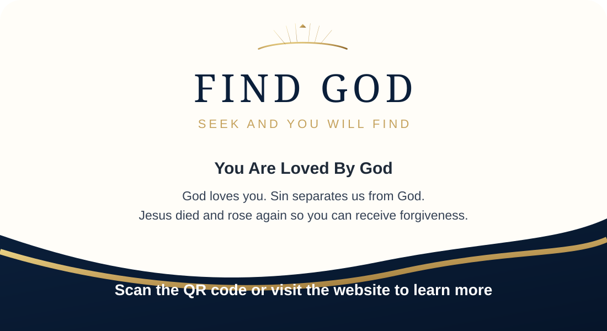
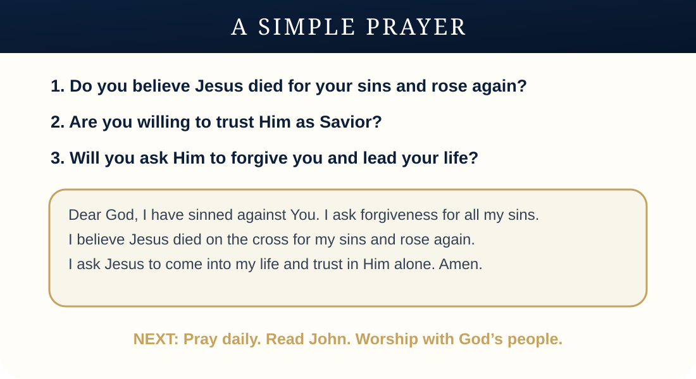

FIND GOD
Helping ordinary people confidently share the Gospel of Jesus Christ.
Many believers want to share their faith but are unsure what to say. FIND GOD provides a simple, Scripture-based salvation card designed to help people share the good news with friends, family, co-workers, and anyone searching for hope.
A Salvation Card for Everyday Conversations
Designed to fit in a shirt pocket, Bible, wallet, purse, or outreach packet.
Sharing the Gospel Should Not Feel Complicated
Many people who believe in Jesus have never shared the Gospel with another person. Often, it is not because they do not care. It is because they are afraid of saying the wrong thing, unsure where to start, or overwhelmed by confusion about religion.
FIND GOD was created to make sharing the Gospel simple. You do not have to be a pastor, preacher, minister, missionary, or Bible scholar. You simply need a willing heart and a clear message from Scripture.
See the Sharing GuideThe Gospel Is Simple
God loves you. Sin separates us from God. Jesus died on the cross for our sins and rose again. Everyone who believes in Him can receive forgiveness, salvation, and eternal life.
God Loves You
The message begins with God’s love, mercy, and desire for people to know Him.
Sin Separates Us
The card explains why forgiveness is needed without creating confusion or debate.
Jesus Saves
Jesus died on the cross for our sins and rose again.
Respond in Faith
The card gives a clear invitation to trust Jesus Christ as Savior.
A Simple Card That Helps You Share the Gospel
The FIND GOD salvation card walks through the message using Scripture, simple questions, and a clear invitation to respond.
- A clear explanation of sin and forgiveness
- Key Bible verses
- Simple yes/no questions
- A prayer to receive Jesus Christ as Savior
- Next steps for new believers


From Printed Card to Online Help
Each printed card can include a QR code that leads people to a simple online page with the Gospel message, a prayer of salvation, what to do next, the book of John reading guide, help finding a Bible-teaching church, and a contact form for prayer or questions.
Help Someone Find God
Download the card, carry it with you, and ask God for an opportunity to share the good news of Jesus Christ.